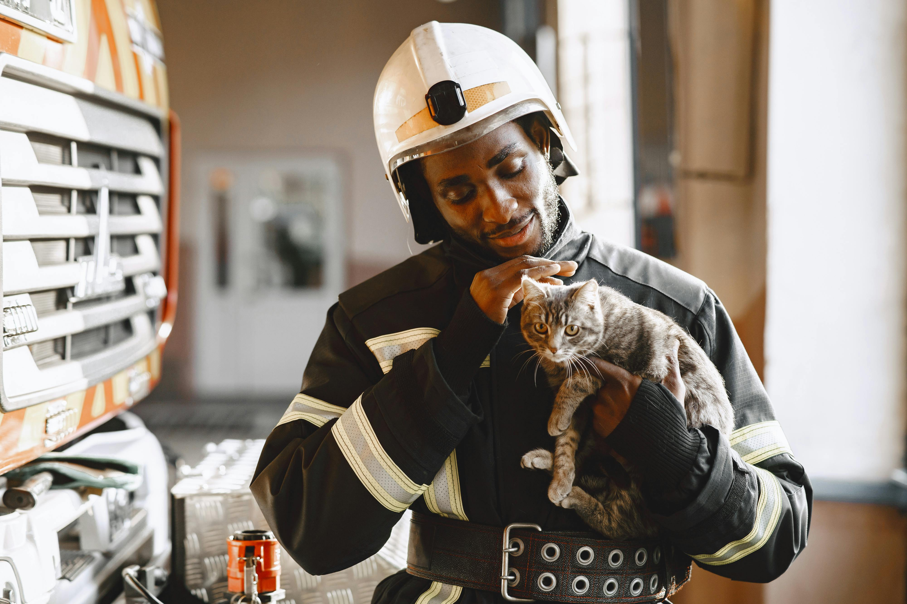

Welcome to Pawsitive Rescue

At Pawsitive Rescue, we believe every animal deserves a second chance and a loving home. Our nonprofit rescue organization is dedicated to rescuing, rehabilitating, and rehoming abandoned or neglected animals throughout the community. Through compassion, teamwork, and the support of caring volunteers, we help animals begin a new chapter filled with safety, comfort, and love.
Since our founding in 2016, we have helped more than 1,000 animals find forever homes. From playful dogs and curious cats to smaller companions in need of care, each rescue receives medical attention, socialization, and a chance to thrive. Whether you are looking to adopt, volunteer, or support our mission, you are helping us create brighter futures for animals every single day.
Our Mission
Our mission is to rescue, rehabilitate, and rehome animals in need while promoting responsible pet ownership and community awareness. We provide foster care, medical support, training, and compassionate rehabilitation to help each rescue animal feel safe and loved while waiting for their forever home.
Featured Pet

Name: Bailey
Breed: Labrador Retriever Mix
Age: 2 years old
Bailey is an energetic and affectionate Labrador mix who loves long walks, belly rubs, and spending time with people. She is wonderful with children and would thrive in an active and loving home. Bailey is always ready for adventure and would make a loyal best friend for the right family.